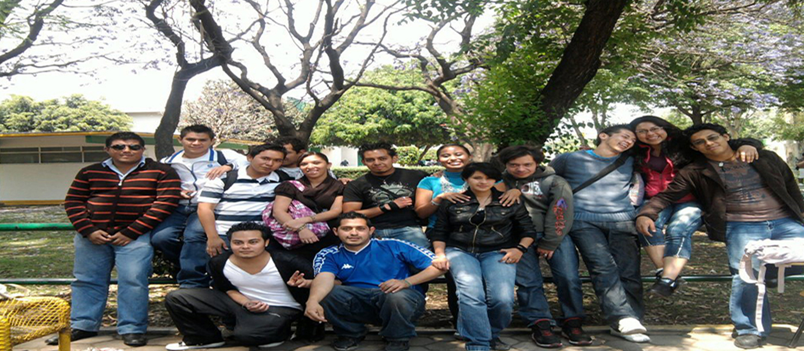
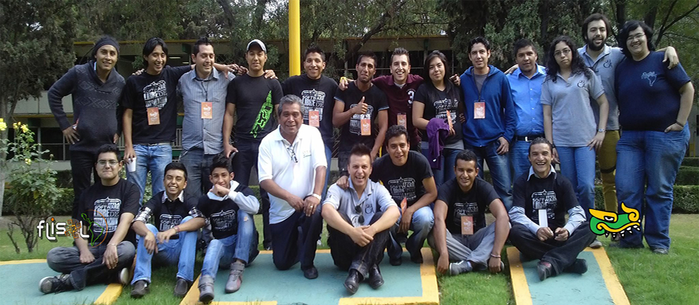
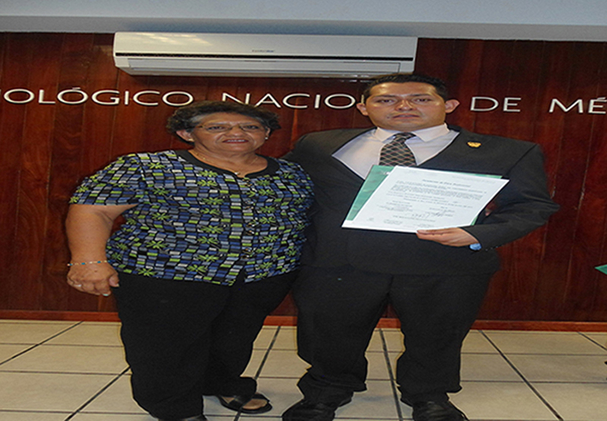
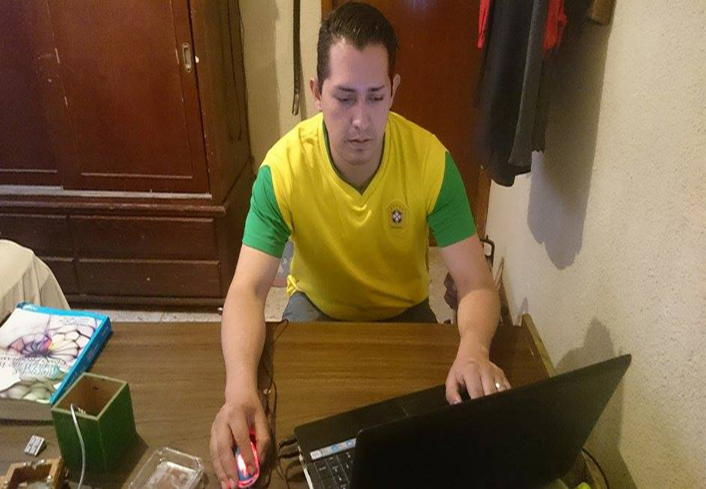
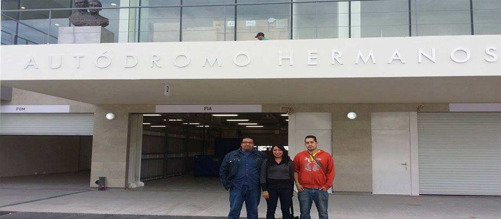
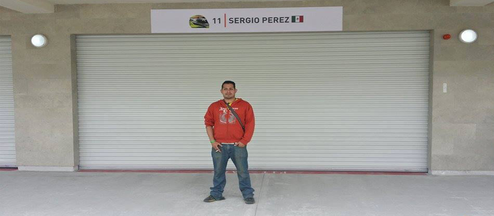
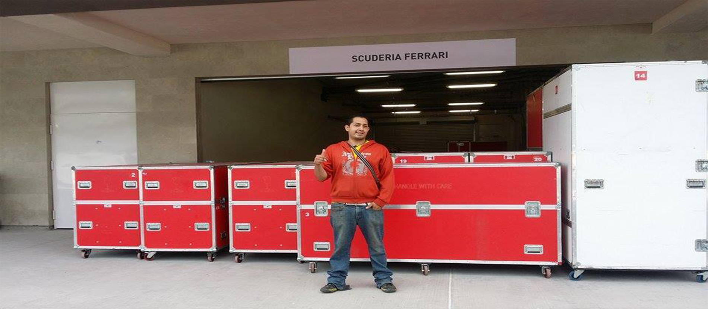
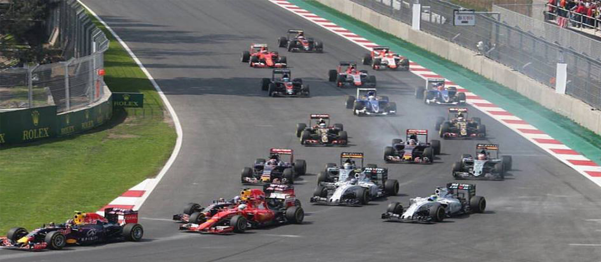

Mis mejores momentos
- 
Donde pase los mejores años de mi vida conviviendo con mis amigos y disfrutando la gloriosa vida de ser estudiante en el Instituto Tecnológico de Tlalnepantla.Universidad
- 
Participando en el evento de difusión de Software Libre más grande en Latinoamérica.Flisol

Una de las cosas que aprendí jugando fue el compromiso individual que se debe tener con el mismo objetivo del equipo , eso es lo que hace que un equipo ganador.Futbol Americano
- 
Agradeciendo a mi familia por todo el apoyo brindado en mis estudios y con el objetivo de ser buen profesionista .Familia
- 
El estudio continua para mejorar habilidades, con el objetivo de incrementar los conocimientos, capacidades y aptitudes.PROGRAMANDO
- 
Una gran experiencia haber laborado en el Autódromo Hermanos Rodríguez para el evento gran premio de México 2015 de Fórmula 1 conocer las tecnologías que se ocupan.AUTODROMO HERMANOS RODRIGUEZ
- 
Una gran inspiración saber que un mexicano está participando en la Fórmula 1 , que si se puede lograr los sueños solo es cuestion de actitud y compromiso para alcanzarlosPITS CHECO PEREZ
- 
Conocer los recursos tecnológicos que se implementa en las piezas de los motores , llantas , volantes y la estructura del los coches ha sido increíble.Pits Ferrari
- 
Esa sensación de adrenalina única al escuchar los motores , como se escucha cuando se rompe el viento por la velocidad , ver como conducen a alta velocidad.El gran premio de México 2015